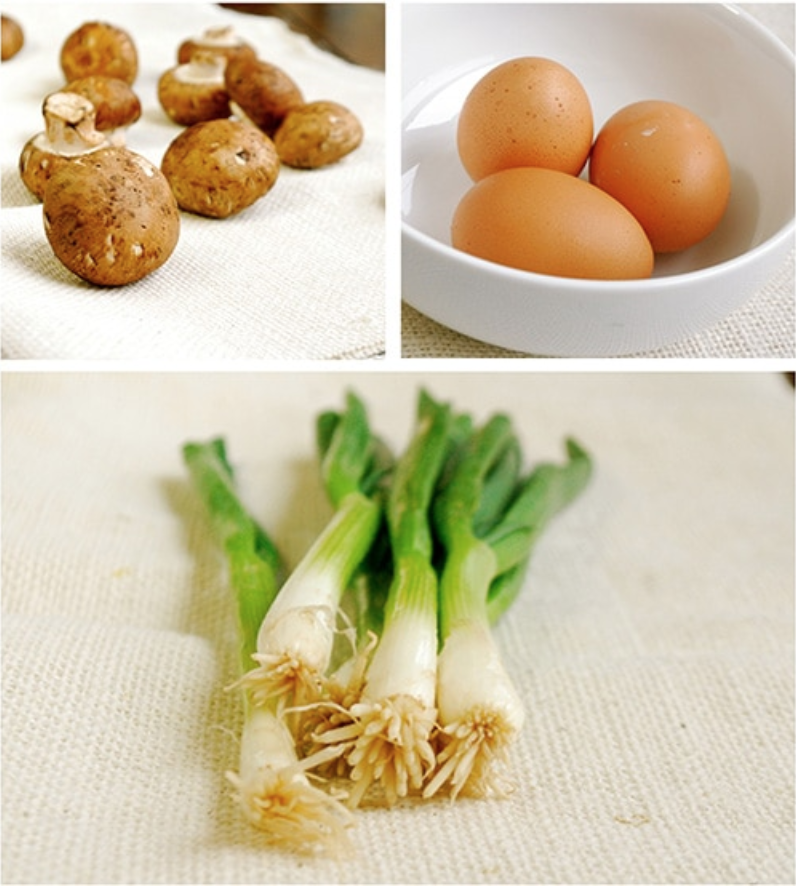
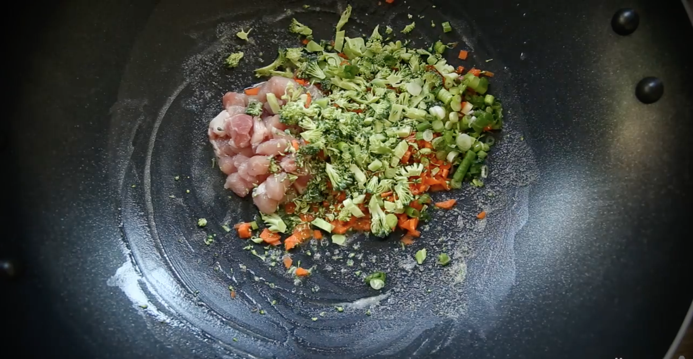
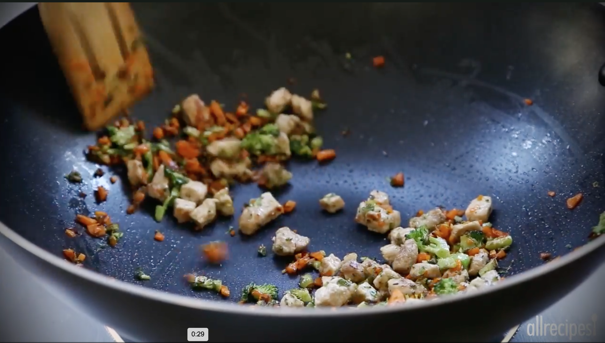
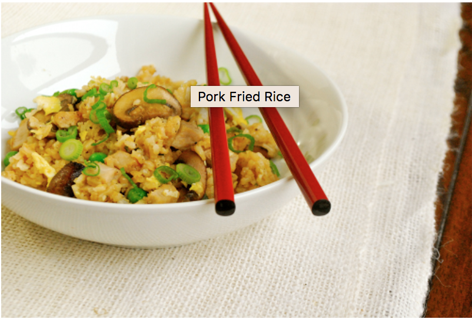

|

Ingredients: Pork Chops, mushrooms, shallot, green onions, garlic, ginger, rice, soy sauce, eggs |
|

Heat oild and season pork chops with salt and black pepper. When cooked through, chop the pork into bite-size pieces and set aside. |
|

Now use oil to cook the mushrooms for 2 minutes. Add the shallot, green onions, garlic and ginger and cook for 5 minutes. |
|
Add the chopped pork, rice, soy sauce, hoisin sauce and thawed peas and stir to combine. |
|

Pour the eggs on the rice and cook until done. Garnish with green onions! |